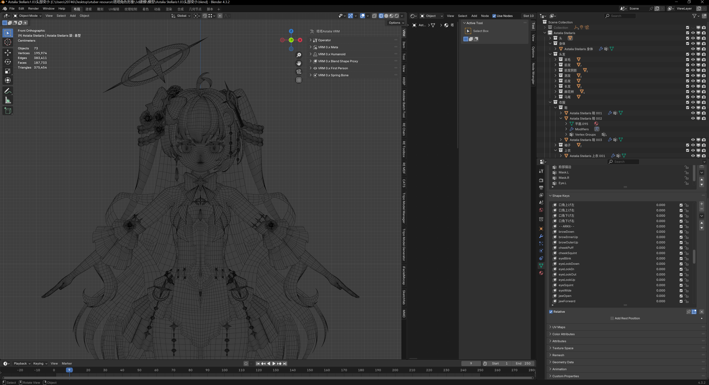
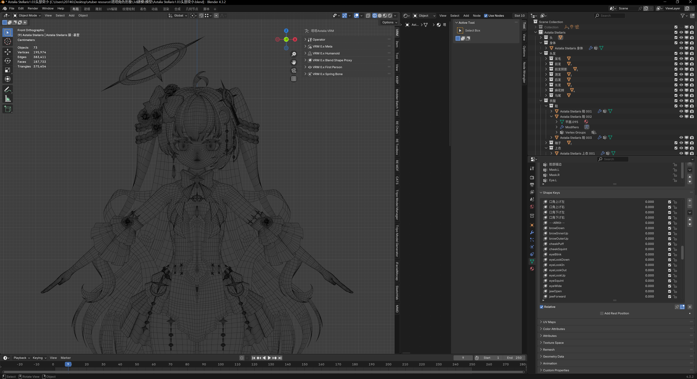
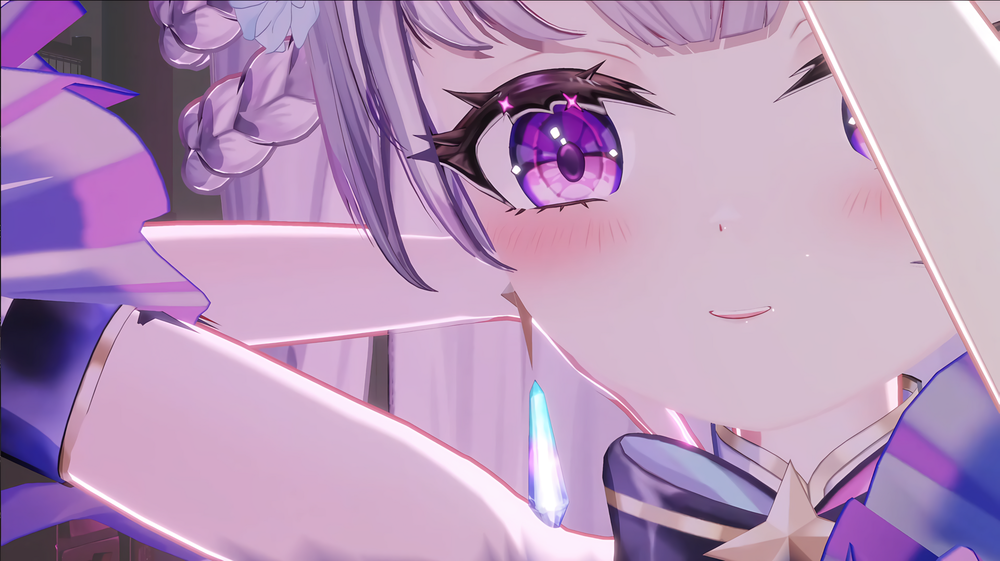
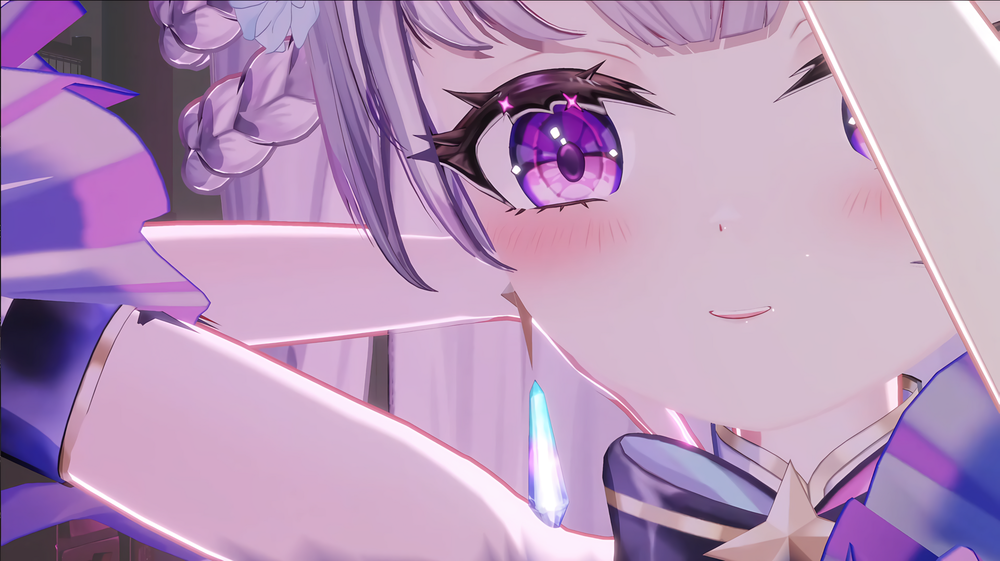

VIRTUAL
IDENTITY
"Not everyone has the ability to obtain love, but everyone is worthy of it."
A virtual redemption experiment born from a community crisis.
A cross-media narrative integrating real-time voice conversion, Live2D performance, and 3D interaction.
Produced by Zhenming Duan
Origin & Concept
Project Background
The project originated from a community emotional crisis in April 2024. Based on ethnographic observations of the "emotional compensation" mechanism within the player community, I conceptualized this character.
Official Announcement
Approximately 50,000 protest comments were deleted by officials. On the day of release, protest comments reached 220,000.
Player Voices
The image records a player expressing why they felt so angry and disappointed. This marked the moment I noticed the immense emotional reliance players placed on this game.
Early Development
Based on my community philosophy and the source of resistance, "Blue Archive", I designed the Exoteric (Outer) and Esoteric (Inner) layers.

Exoteric Layer: I utilized similar concepts of halos and girls but chose a delicate, glossy art style, traditional J-Fantasy elements, the "reverse sexual tension" of drooping eyes, and relatively revealing attire. This visually places the character in opposition to Blue Archive.
Esoteric Layer: Based on the emotional destruction experienced by players, my reflections on the developer-player relationship, and my own search for emotional reliance, I designed a story of "a girl displaced by the Demon King destroying her hometown, carrying expectations that do not belong to her while seeking love."
Digital Avatar
Character Showcase
Promotional video featuring the character’s visual appearance, emotional sprite variations, and background information.
Character Showcase PV
A promotional video featuring the character’s visual appearance, emotional sprite variations, and background information.
- Illustrator: 怠DiE (DaiDie)
- Modeler: 小路姬_Ibuki
- Video Production: Astalia_Stellaris (Zhenming Duan)
- BGM: "A Guiding Star" by Elliot Hsu
Live Performance
Showcase of RVC real-time voice conversion effects from live stream highlights.
Live Performance Reel
A showcase of RVC real-time voice changing effects.
- Original Song: Toki wa Itoshiki Mono o Nosete ~Forget You Not~
- Original Singer: Madoka Yonezawa
Promotional Assets
Assets created for VTuber operational activities and to enrich the character's image.
MHWilds Character Mod
Created a simple model of Tata using Koikatsu, and produced a character replacement mod for "Monster Hunter Wilds" using Blender and open-source RE Toolbox/RE MDF plugins.


Memes
Memes, stickers, and signature designs edited using Photoshop.

Promotional Art
Produced character promotional art using ComfyUI with various checkpoints combined with my trained LoRA model. Details were manually refined in Photoshop rather than using inpainting to ensure higher quality.
Tech Stack
3D Character Modeling
Created a 3D model in Blender based on the split-illustration provided by the artist.
 


To optimize the character for 3D environments, I studied famous VRChat models and made slight adjustments to the face and eye shapes from the original concept.
Real-time Voice Convertion Pipeline


Using Studio One 6 as digital audio workstation for real-time voice conversion pipeline.
Voice Tuning Showcase
Demonstration of recording and audio post-processing using DAW and RVC simultaneously.
Unity NPR Rendering
Achieved a glossy cartoon texture using the LilToon shader.
 

Image rendered directly from Unity without external processing.
Unity NPR Rendering
Glossy anime-style rendering using LilToon.
Video rendered directly from Unity without external processing.
AIGC Workflow
SDXL-based LoRA training and ComfyUI node graphs.

AI-Assisted Workflow
The workflow was constructed by myself.
Models used:
- noobaiXLNAIXL_epsilonPred11
World Building
Original Soundtrack (OST)
Original music and impression tracks related to the project.
Click the list on the right to switch songs.
Song Title
Artist Name ALBUM NAMELoading track info...
World Architecture
The story's worldview consists of Astalia's homeland and a modern Earth in an alternate timeline. The twin planets Luciarion & Nyxarion in the Sector Astalia nurtured the Starborn, including Ta Chan. After the Demon King destroyed Luciarion, Tata fled to Earth carrying their hopes. On Earth in this timeline, AI technology is ahead of other fields, but the physical embodiment of AI agents is still under research. After arriving on Earth, through various coincidences, Ta Chan shares a room with an experimental AI agent robot. Two non-human beings rely on each other in the human world, exploring the meaning of love.
Luciarion & Nyxarion
Luciarion and Nyxarion are twin planets. Luciarion is smaller but possesses a thriving ecosystem, where Ta Chan and other Starborns live eternally under the Goddess's Grace. Nyxarion is much larger; over eons, it withstood countless meteorite impacts and violent geological movements, radiating heat and radiation like a fireball, surrounded by an asteroid belt. Yet, compared to a fusion-powered star, its energy is as faint as a self-luminous moon. Because of the size difference, they are often considered a planet-moon system. If viewed from this perspective, Ta Chan's home, Luciarion, would be the moon. However, in the eyes of the Starkin, Nyxarion is the giant moon hanging high above the stars. If the ecosystems of the Earth and Moon were swapped, would the inhabitants of the moon look at the Earth and consider it just a giant moon?
LUMINA
Omniversal Machine Neural Intelligence (OMNI) is the largest AI giant on Earth. They initiated the LUMINA (Living Universal Machine Intelligence for Next-generation Assistance) project. The goal is to research entities capable of possessing or even surpassing human "love" as carriers and disseminators. The project validates whether AI can hold equal status with humans as loving individuals, hoping that such a project, true to its name, will become a light illuminating human hearts.

Astheral
Although the "Astheral" and the "Goddess's Grace" are both energies disseminated by the Goddess to Luciarion, Astheral is soul-based. Only the Starborn can receive, utilize, and radiate this energy. Soul energy does not decay with transmission; thus, the connection between the Goddess and Starborn is a two-way flow, and Starborn can also transmit weaker Astheral energies among themselves. Does this sound familiar? Students of computer networks will recognize the principle of P2P (Peer-to-Peer). The propagation logic of the Astheral energy is analogous to a P2P network: the more Starborn participate, the more energy they receive. As the largest node/port, the Goddess naturally produces and receives the most energy—the prosperity of the Starborn and the power of the Goddess are mutually reinforcing.
The Starnucleus Tower
The Starborn are naturally endowed with a connection to the Goddess and to each other, allowing them to share the Astheral energy. After discovering the logic behind this energy, the Starborn united to build several towers on the planet. These towers serve as communal connection hubs, concentrating and strengthening the network. Starborn possess an innate crystal on their foreheads, a symbol of life and the medium for connection with the Goddess. To sustain the massive energy flow of multi-person connections, a giant crystal beacon, called the Starnucleus, is placed in the center of the tower's main hall. Upon completion of the towers, the Starborn spontaneously formed major tribes around them.